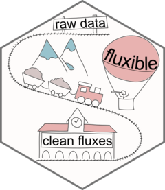

Using a fixed measurement length to slice the measurements
Source:R/flux_match_fixed.R
flux_match_fixed.RdProvides the f_end column for flux_match
Arguments
- field_record
dataframe recording which measurement happened when. Has to contain at least a column containing the start of each measurement, and any other column identifying the measurements.
- start_col
start column in field_record (
ymd_hmsformat)- measurement_length
length of the measurement (in seconds) from the start specified in the
field_record